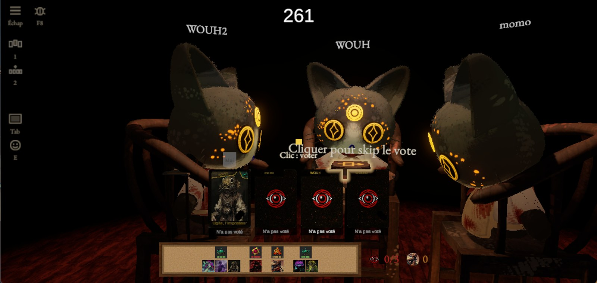
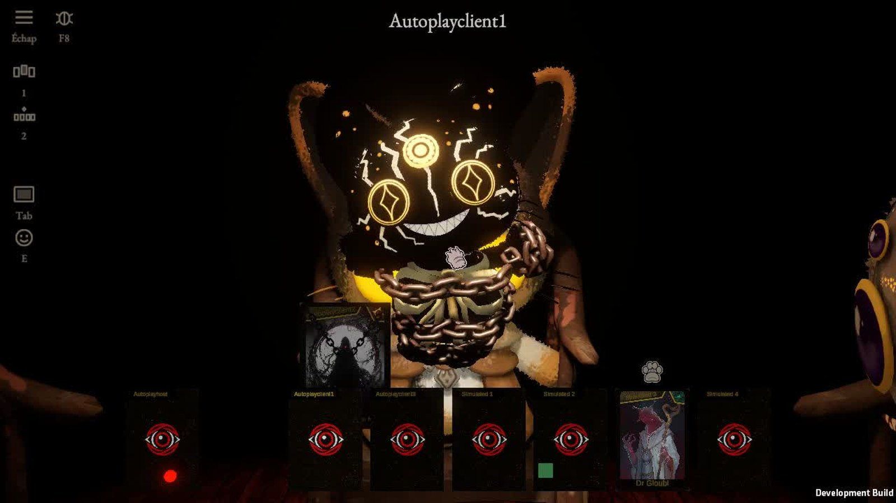
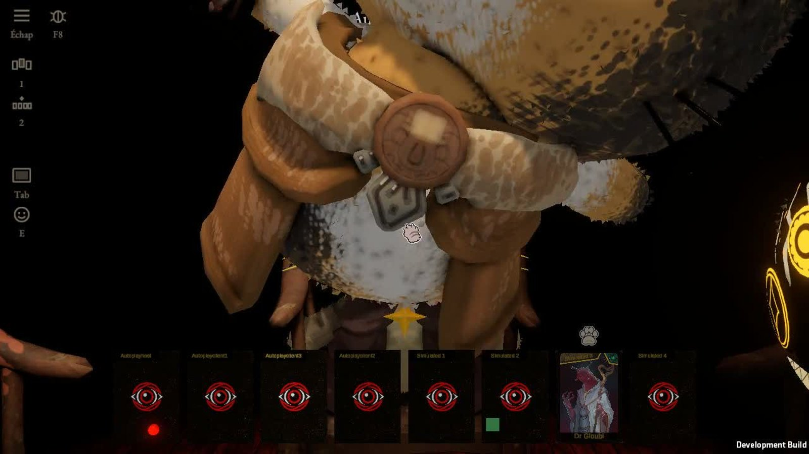

Cercle du jour : tout le monde sur le même cercle
Référence. Liar's Bar : quatre joueurs à la première personne, chacun assis à sa vraie place autour de la table ; les voisins se voient en tournant la tête. Lu sur des fiches, pas vu en jeu.
Aujourd'hui. Tu es assis en retrait du cercle des autres (32 m du milieu, eux à 12 m, à 4 joueurs) pour voir tout le monde d'un coup. Mais un chat qui te regarde vise la place où tu serais sur le cercle : il a l'air de regarder à côté (Wouh, salon #bug, 15/11 ; capture ci-dessous en X0). Piste B choisie : tu t'assois sur le cercle, et il s'élargit un peu.
La scène. Premier vote à 4 joueurs : les trois autres vrais joueurs tournent la tête vers toi. Puis Abyss est enchaîné et flotte au milieu.
Sans question. Assis sur le même cercle, un regard vers toi arrive sur toi chez tout le monde, sans autre calcul. La vue au repos vise les visages d'en face, posée une fois sous le noir du début du jour, puis plus jamais touchée. Les voisins ne sont plus dans le cadre au repos : on tourne la tête pour les voir. Captures du vrai jeu (parties de bots, à 4 joueurs seulement : le PC était trop chargé pour des parties à 6). Le texte « Cliquer pour skip le vote » vient du curseur au centre, posé sur le guéridon : c'est déjà le cas aujourd'hui (voir X0). Avec les chats à 75 %, en R2, le cadre rouge en bas à gauche du moment « Chat enchaîné » est un message de l'outil de test, pas du jeu.
La taille des autres chats
Aujourd'hui les autres chats sont réduits à 75 % (fait pour la vue en retrait). Assis à côté d'eux, leurs visages tombent sous ton regard, à la hauteur du guéridon et des cartes. Montré sur le cercle R1.
Le guéridon du skip, au milieu, passe devant le visage du chat d'en face.
Tout le monde a la même taille : les visages d'en face arrivent à hauteur des yeux, au-dessus du guéridon.
Quelle taille pour le cercle ?
Capture de Wouh à 4 joueurs : toi en retrait, les autres sur un cercle plus petit. Une seule image, quel que soit le moment choisi.

Le cercle des autres d'aujourd'hui, 15 % plus grand, et toi dessus.
Une fois et demie le cercle des autres d'aujourd'hui.
Le double : les voisins plus loin, celui d'en face plus petit.
Le chat enchaîné, au milieu du cercle
Il ne peut plus flotter à 37 m devant toi : ce serait derrière le chat d'en face. Il vient au milieu. Montré à 4 joueurs, cercle R1, chats à 75 %.
Plus petit que les autres chats pendant qu'il flotte, pour garder la même place à l'écran qu'aujourd'hui. Il monte au-dessus des cartes.

Il garde sa taille : vu de près, il dépasse l'écran, sa carte aussi.
